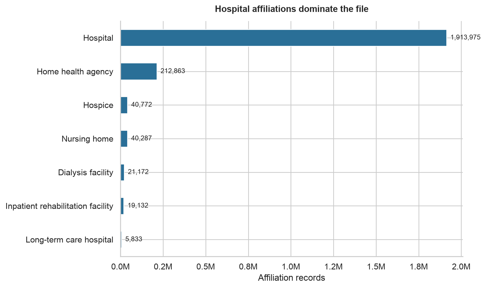
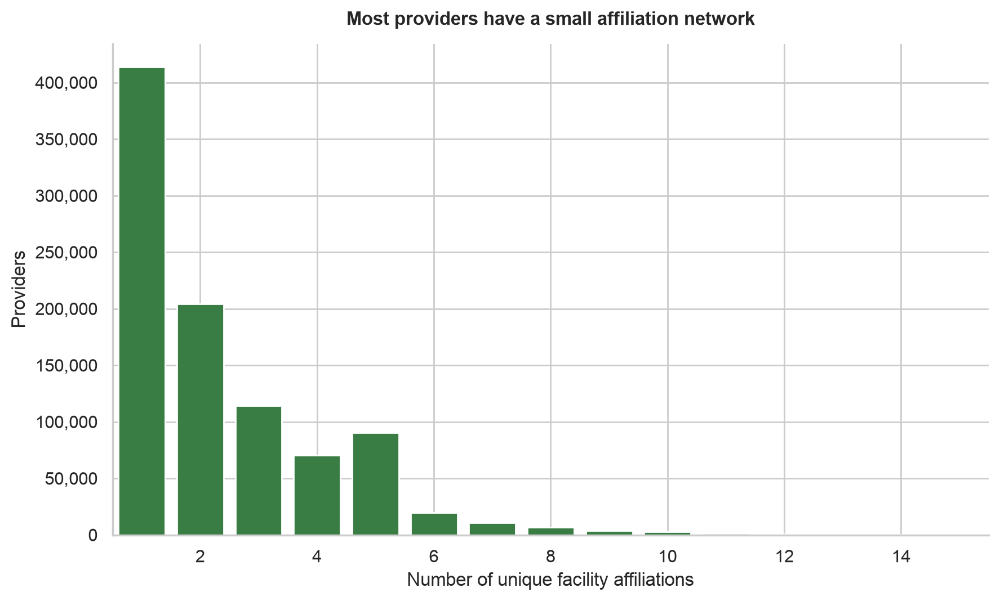
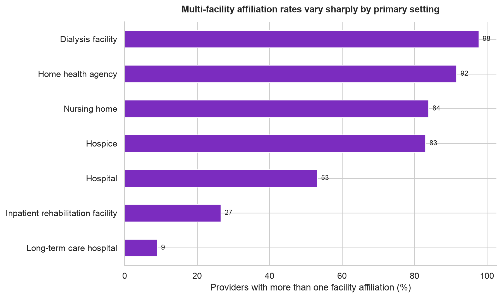
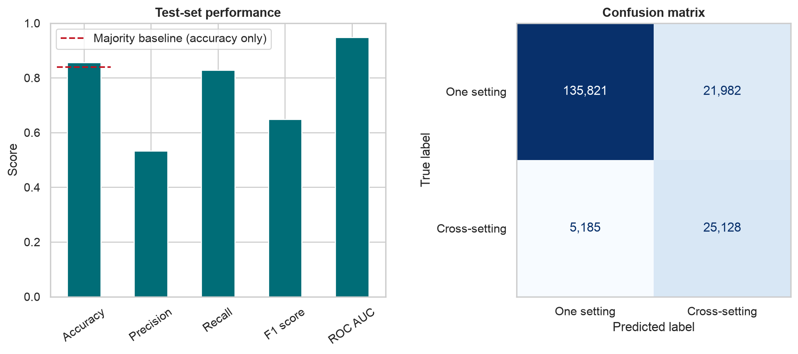

One Provider, Many Doors: What 2.25 Million Medicare Affiliations Reveal

Healthcare looks connected from the outside, but the actual network is uneven. I analyzed 2,254,034 Medicare facility-affiliation records covering 940,577 providers to see how those connections are distributed and whether a simple model could identify providers who work across different care settings.
1. Which facilities dominate the data?
Hospitals account for 1,913,975 records, far more than any other setting. That was my first warning not to treat the national total as a balanced picture of healthcare. Hospital activity can easily drown out smaller settings such as hospice, dialysis, and long-term care.
2. How connected are individual providers?

The typical network is not huge. The median provider has two facility affiliations. Still, 56.0% are affiliated with more than one facility, and 16.1% cross into more than one type of care setting. That smaller cross-setting group may be especially important when health systems are planning transitions between hospital and follow-up care.
3. Where are multi-facility networks most common?

The differences are sharp. About 97.7% of dialysis-centered providers and 91.6% of home-health-centered providers have multiple facility affiliations. The rate falls to 9.0% for providers centered in long-term care hospitals. These are associations, not proof that a setting causes a larger network, but they show where I would investigate first.
4. Can the model spot cross-setting providers?

My logistic-regression model reached 85.6% accuracy and 83.0% recall on providers it had not seen during training. That accuracy is only 1.7 percentage points above the 83.9% majority baseline, so I would not call accuracy alone impressive. The model's 0.948 ranking score means it separates the two groups well across possible cutoffs. However, only 53.4% of the profiles it flags are actually cross-setting, so the false alarms matter.
For a realistic planning scenario, I tested a summarized hospital-centered profile with four affiliations while imagining that the setting details had not arrived yet. The model estimated a 56.8% chance that the affiliations cross care settings. I would use that result to prioritize a manual review, not to make an automatic decision. Once the complete facility-type history is available, the team should calculate the answer directly instead of using the model. The data can point us toward a useful question, but a person still needs to verify the answer.